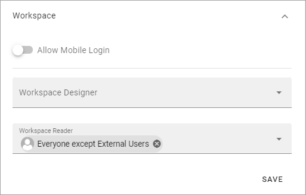
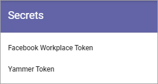

Permissions for a Business Profile¶
Here you can set the following:

Users and groups¶
Here you can add or remove Business Profile Administrators, and set separate administrators for Announcements, Shared Links and Workspace, if needed. You must be Business Profile Administrator or Tenant Administrator to edit the permissions.
A Business Profile Administrator automatically has permissions for Workspace, Shared Links and Announcements and therefore does not need to be added there.

Note that every Business Profile has it’s own Permissions list. Besides that, a Tenant Administrator can always edit settings for all Business Profiles.
To add an administrator in any of the permissions lists, add the name the same way as in other name fields. To delete an administrator here, just click the x.
Single users, Security groups and Microsoft 365 groups can be added here (In Omnia on-prem, Microsoft 365 groups can’t be used).
Note that external users that has been invited in the Azure AD can be added here as well. Users invited this way can log in with their own Microsoft 365 account.
Administrators are added or removed the same way for Business Profile, Shared Links and Announcements.
Options for Workspace¶
The permission settings Workspace are a bit different:
Allow mobile login: This setting is intended to offer login to certain parts of Omnia for first line workers, partners and similar. The user needs the Kaizala app and a viable account. If you come across a label that says “Kaizala login” - it’s the same thing. Note! Mobile login/Kaizala login can’t be used in Omnia on-prem.
Business Profile Workspace Designer: Add and remove Workspace Designers (administrators) here as needed.
Business Workspace Reader: Here you can set permissions for the Workspace navigation.
Secrets¶
When an extension has been installed for the Business Profile, get the security key/token and enter it here. In this example tokens for Facebook Workplace and Yammer can be added:
